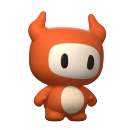

Good evening, Darius
What can I help you with?
Ask Cinderpaw…

Ask Cinderpaw…
What can I help you with?
Here is the week, built from your notes. I kept your order and moved the site before the video, because the video links to it.
The first three days carry the launch itself: Monday you tag the release and build the installers, Tuesday the site and download page go live, Wednesday the announcement and the video go out. The rest of the week is for replies and fixes.
Sure. I'll keep it short, in your voice, and link the download page.
